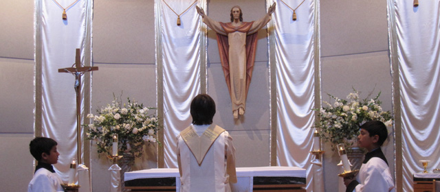

307 Montrose Drive, Folsom, CA 95630, Phone: (916) 985-2065, e-mail: office@stjohnsfolsom.org
Where All Are Welcome
Confirmation

- Confirmation (or Chrismation) is the sacrament of the Holy Spirit, the Holy Spirit whom Christ Jesus sent (John 7:37-39, 16:7). Jesus instructed his Apostles that they "will receive the power of the Holy Spirit" and called upon the Apostles to be his "witnesses to the ends of the earth" (Acts 1:8). At the Pentecost, the Apostles were filled with the Holy Spirit (Acts 2:1-4), and began to spread the Word of God. The Acts of the Apostles is often called the Gospel of the Holy Spirit. St. Ephrem of Syria, as well as St. Cyril of Jerusalem, wrote of the Sacraments of Chrism and Baptism in the mid-fourth century AD.
- The rite of Confirmation is anointing the forehead with chrism, together with the laying on of the minister's hands and the words, "Be sealed with the Gift of the Holy Spirit." The recipient receives the seven gifts of the Holy Spirit: wisdom, understanding, counsel, fortitude, knowledge, piety, and fear of the Lord (Isaiah 11:2-3). On occasion one may receive one or more of the charismatic gifts of the Spirit (1 Corinthians 12:7-11).
- The ecclesial effect and sacramental grace of the sacrament give the recipient the strength and character to witness for Jesus Christ. The East continues the tradition of the early Christian Church by administering the sacrament with Baptism. Confirmation in the West is administered by the Bishop to children from age 7 to 18, but generally to adolescents, for example, to a graduating class of grade school children. Key Scriptural sources for Confirmation are the following (See also Acts 1:4-5, 2:1-4, 2:38, 10:44-48):
| Sacrament | Biblical Basis | Central Words | Central Actions | Effects |
|---|---|---|---|---|
| Confirmation | John 20:22 - "(Jesus) breathed on them (the disciples) and said, 'Receive the Holy Spirit'"; Acts 8:17; 19:6 - believers receive the Spirit, esp. through laying on of the apostle's hands Acts 10:44-48 - the coming of the Spirit is closely associated with the Baptism of new believers |
"(Name), be sealed with the Gift of the Holy Spirit." |
Laying on of hands (the bishop lays his hands on the head of the confirmand). |
Being strengthened by the Holy Spirit; being "confirmed" in the fullness of the Christian faith. |